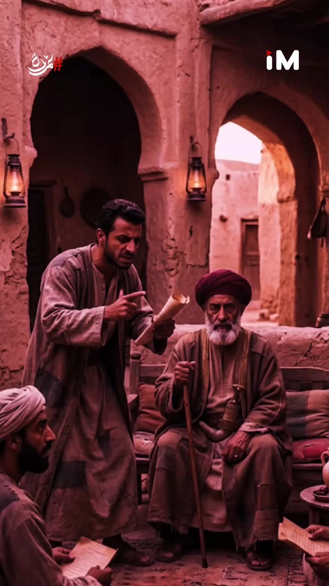

مقدّم برامج وصحفي. اشتغلت في التلفزيون، وأقود اليوم فريق الإعلام في مجموعة صحاري بقطر.

زمول السيحفيلم قصير · صحاري الناموسسلسلة · صحاري سبورت اليوم الوطنيتصوير جوي · صحاريبرنامج عن الثقافة الحسانية: الشعر والعادات وحياة الخيمة، بلسان أهلها.
شاهد حلقة كاملةبرنامج أسبوعي بدأناه أنا وأصحابي على صفحة مستقلة: شعر وحكي وجلسة. هذي ثلاث حلقات منه.
تنظيف وتعديل في Photoshop: [اكتب وش سويت في الصورة]
بدأت التقديم وصناعة المحتوى من 2022، ثم في التلفزيون. اليوم أشتغل على الهجن وأهلها في صحاري. أقدّم وأكتب وأصوّر وأحرّر، وأهتم بالتلوين أكثر من أي شيء ثاني.